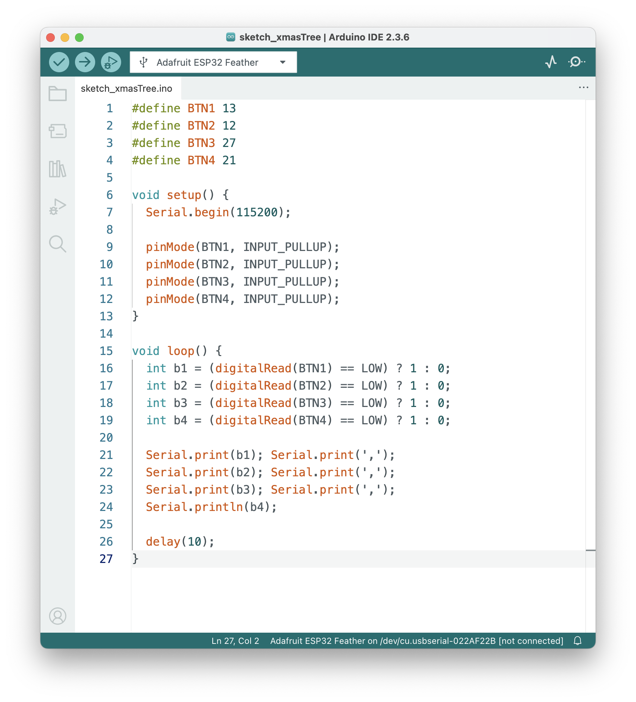

First, I want to make a Christmas tree. Pressing each button will generate a triangle along with the sound. After we have 3 triangles, I want to generate the glitch effect by rotating the potentiometer. The glitch effect and sound will respond to the change of data.
However, it didn't work. I thought this was a simple effect. But there was always a ghost glitch in the right corner of the canvas.
Then, I changed the visuals. Instead of pixel tree and glitch, pressing each button would generate a different tree along with the sound. After 4 trees generated on the screen, you could click each tree and add some colorful bulb. Click tree also triggers the sound as well.
Refind the layout and margin.
Processing Sketch
Download Processing Sketch